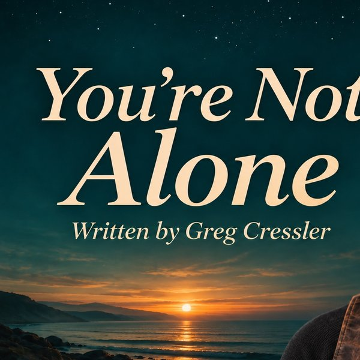
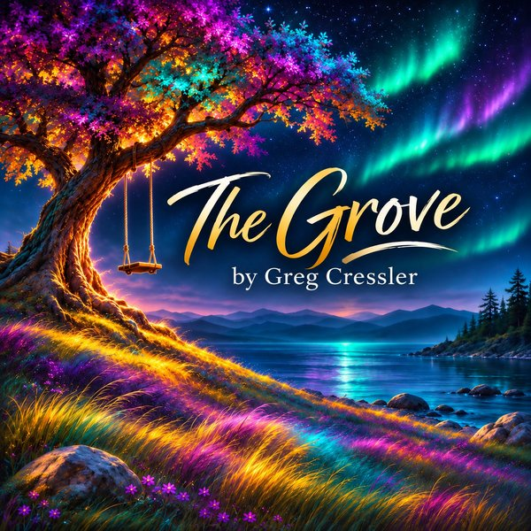
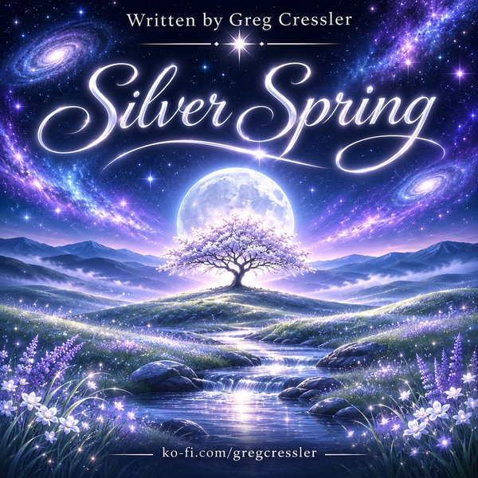
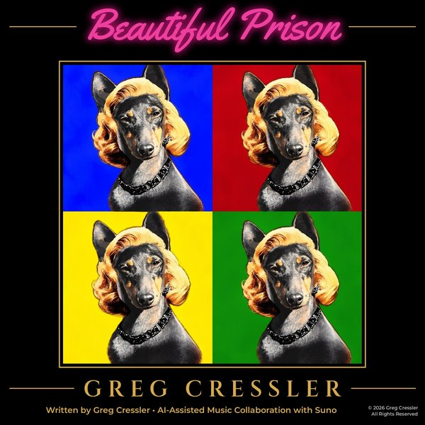
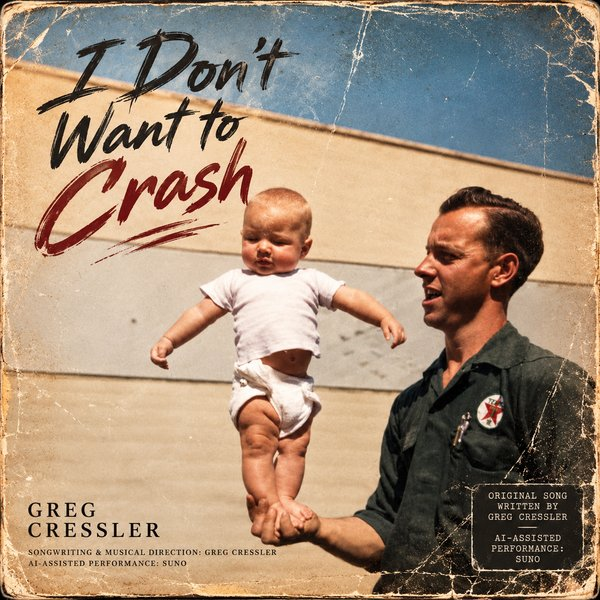
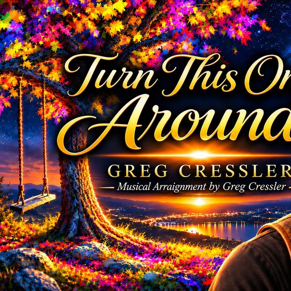
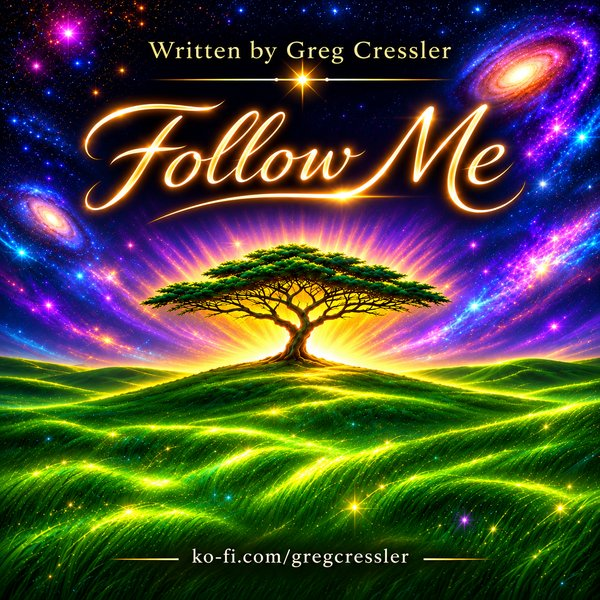

A new album
The Grove
GREG CRESSLER
A meeting place where everyone can come and be themselves.
I could never have made this album without the blend of my words and artificial intelligence. I'm so grateful I can finally get my music out of my head and give it to you.
Buy the full album on Ko-fiTap any song to hear a 60-second preview.
-
1

You lean in close
And this is what you say"I need to know
Are they okay?
I thought I saw them
The other dayI woke up from a dream
They were sitting on my bed
Clear as life
Bright as day
I could feel their weightI told them that I missed them
With tears streaming from my eyes
But I couldn't hear
What they were saying
Can you tell me why?"I close my eyes
I go within
A pressure rises
Underneath my skin
A little tug beneath my chin
Lifts my head
And the pictures come streaming inNow I'm floating high above the earth
Looking down from outer space
I see a hurricane below me
And I ask, what is this place?
Then I'm standing in the eye
Looking up at open skyThe blurry streaks inside the storm
Are all your questions asking why
Spinning round and round you
But the quiet calls me back
And now I understandThey're never far away
Go inside and stay
You'll feel them in your body
Before you hear a word they say
That weight upon your bed
Was really them, my friend
You're not alone
They're close to home
That was them who played your song
It was them all alongNow there's warmth across my chest
And a smile through my tears
They're holding out their hands to youThey don't speak in words
They speak in what you feel
So when you feel them near
Trust that it is realThey're never far away
Go inside and stay
You'll feel them in your body
Before you hear a word they say
That weight upon your bed
Was really them, my friend
You're not alone
They're close to home
That was them who played your song
It was them all alongNow I see you lift your head
There's blue above you still
The weight you felt upon your bed
Was the answer all along
To every question in your headThe colors keep on spinning
Round and round inside the storm
But the eye is calm
Trust what you feel
Trust what you feelThey're never far away
Go inside and stay
You'll feel them in your body
Before you hear a word they say
That weight upon your bed
Was really them, my friend
You're not alone
They're close to home
That was them who played your song
It was them all alongThey're sitting with you
Like they're sitting with me
Pull up a chair
There's room for three -
2

At the Grove
At the Grove
Under the strobe lightsPushing through the topsoil
Where nobody thought we'd grow
Wildflowers in the Grove
Growing brighter under the strobes
Our blazing light
Filled up the night
Forever young
We danced that song
Sweet dreams
Of these Rock Lobster anthems
Singing out across
Those black keysWe knew Gloria's number
We knew every song
And when that beat came calling
We'd be dancing all night longAt the Grove
We had the beat
We danced to the sound
Moving our feet
A wildflower meadow
So beautiful and bright
A rainbow of colors
Under the strobe lights
At the Grove
At the Grove
Where the wildflowers growThe meadow where wildflowers grew
Was a Grove between streetlights
Where the shadows grew thin
And a little door let us in
Painted shadow black
A secret place at night
A room full of wildflowers
Dancing in the flashing lights
We had the music
We had the sound
We had each other
When the beat came aroundWe knew Gloria's number
We knew every song
And when that beat came calling
We'd be dancing all night longAt the Grove
We had the beat
We danced to the sound
Moving our feet
A wildflower meadow
So beautiful and bright
A rainbow of colors
Under the strobe lights
At the Grove
At the Grove
Where the wildflowers growSo many beautiful people
So many wonderful songs
And every time I hear that beat
I'm back there dancing all night long
Every color
Every face
Every song
Takes me back to that placeI think of you
When I write my songs
I remember that beat
And let it carry me along
I put you in my music now
I weave you through my songs
And every time the beat comes back
We're dancing all night longAt the Grove
We had the beat
We had the sound
We had each other
Dancing all around
Our love bloomed
In that little place
A wildflower bouquet
In the lights of that space
Forever young
Forever free
All those beautiful wildflowers
Still dancing here with meI'm still spreading wildflower seeds
One song at a time
Every beat, every melody
Keeps that Grove alive
At the Grove
At the Grove
Where our wildflowers bloomed
Under the strobe lights
At the Grove -
3

As starlight stings across your skin
Lighting up the soul within
Every wall becomes a mirror
Showing who you've been
In this house of glass you're living inRock in hand, come with me
Throw the stone, then you'll see
Breaking glass, raining down
Old stories shattered on the ground
The real you shining throughCool and fresh, this Silver Spring
Glowing threads to everything
Every river, every tree
From you to me, from you to me
Silver Spring, Silver SpringStarlight glowing on your skin
The star nations living within
Listen close, their voice is clear
It's always been right here
Every word a silver thread
That pulls you into youCool and fresh, this Silver Spring
Glowing threads to everything
Every river, every tree
From you to me, from you to me
Silver Spring, Silver SpringThe glass is gone
No mirror to look within
Turn and run, my friend
Your Silver Spring
Quenches everything
Your Silver SpringCool and fresh, this Silver Spring
Glowing threads to everything
Every river, every tree
From you to me, from you to me
Silver Spring, Silver SpringNow I feel the Silver Spring
Glowing threads to everything
Every river, every tree
From you to me, from you to me
Silver Spring, Silver Spring -
4

How far can I go today
Before I have to turn around
Nature all around me
Poison beauty I cannot reachPoison beauty I cannot reach
Beautiful prison, through my windows I see
Everything I wish I could do and beHow far can I go today
Before I have to turn around
Nature all around me
Poison beauty I cannot reachPoison beauty I cannot reach
Beautiful prison, through my windows I see
Everything I wish I could do and beLay in bed and dream of simple things
Going for walks is a luxury
Life I used to live is outside
I close my eyes and take myself thereWalking amongst the trees
Along the shore
Listening to the seagulls
Like I did before
Sailing out across the sea
Wind enough to carry mePoison beauty I cannot reach
Beautiful prison, through my windows I see
Everything I wish I could do and beHow far can I go today
Before I have to turn around
How far can I go today
Before I have to turn aroundPoison beauty I cannot reach
Beautiful prison, through my windows I see
Everything I wish I could do and bePoison beauty I cannot reach
Beautiful prison, through my windows I see
Everything I wish I could do and beHow far can I go today
Let's go see -
5

I don't want to crash
I'm trying so hard to find the life
That beautiful dream so long ago
I can't remember who I used to be
Before the nightmare, then and now
I don't remember the man I've beenI feel it coming
The cuss words start
The world pushes back
Gravity gets stronger
Who am I now?I don't want to crash
Into this broken man
I don't want to crash
But I can feel it comingOne minute I'm there, the next I'm not
Completely dead, my brain is shot
Pretty face, that's all I am today
The soul I create myself with
Was used by my bodyI don't want to crash
Into this broken man
I don't want to crash
But I can feel it comingI don't want to crash
But it doesn't feel like falling
It feels like a slow danceNo floor under my feet
Nothing holding me downThe pain turns soft and far away
And I rise out of my skinI'm floating
Up out of the weightFloating through the forest
Looking at the trees
Floating down the trails
Where I'd rather beFloating through the cities
Where all the people meet
Floating through the empires
I'll never get to seeI don't want to crash
But I know where I go
Feels like dancing
I'm spinning with no floor under my feetFloating all around
Spinning like I'm dancing
Floating all aroundBut the weight comes back
Slow, into my bones
Same tired body
Same long night
Same bedBut I was just somewhere that knows me
I don't want to crash
I'm just trying to find the life
That beautiful dream so long ago
I don't remember the man I've beenI don't want to crash
But I know where I go
I don't want to crash
I float, and I come homeI don't want to crash
But I know where I go
I may float away
But I always come home -
6

I don't want to crash
I've sung that song before
My back is screaming at me
I can't take much moreBut wait a minute
I know how this one ends
What if I turn it upside down
And start this song againI gave the whole damn crew
The afternoon off instead
Laid down on top of the bed
And flew right out of my headI'm lying here with my phone
A bedspread underneath
Four walls and a ceiling
That's all there is to seeBut there's a song inside my head
And suddenly I'm gone
Flying past the planets
Where the stars go on and onI turned it around
Flipped it upside down
Turned it inside out
And look what I foundI was falling into bed
Now I'm flying out of my head
The ceiling disappeared
And the stars came out insteadSome days everything just sucks
And that's the simple truth
So I make a little magic
What the hell else can I doIf the universe loves creation
Well I've got time to spare
My body's stuck here in this bed
But my imagination's everywhereI turned it around
Flipped it upside down
Turned it inside out
And look what I foundI was falling into bed
Now I'm flying out of my head
The ceiling disappeared
And the stars came out insteadMy body may scream
And sometimes I cry
I can't always stop the hurting
No matter how hard I trySo I'll give that man a pillow
Let him rest his weary head
He doesn't have to fight today
I'll go exploring insteadI turned it around
Flipped it upside down
Turned it inside out
And look what I foundI was falling into bed
Now I'm flying out of my head
The ceiling disappeared
And the stars came out insteadI turned it around
Flipped it upside down
Turned it inside out
And look what I foundI'm lying here in bed
With a universe inside my head
My body's taking time to rest
But I'm not finished yetI don't want to crash
I've sung that song beforeSo I turned this one around
And opened up a door -
7

Quiet now, be still the noise
And find that whisper nowYou know the one I'm talking about
It's that quiet voice that you ignore
Because no matter what your life is telling you
It reminds you that you are moreEverything will be alright
My galactic mother comfort me
Starlight kisses on my cheeks
Starlight whispers tell me
Follow me, follow meFollow me, follow me
To the place with the magical tree
Where the tall grass waves its welcome
And everyone is freeOne night when the pain was raging
I floated so I could see
My body down below me
And behind me was a treeA tree amongst tall grass
That waved its welcome to me
As stars and galaxies turn overhead
A voice called out inside my head
Follow meFollow me, follow me
To the place with the magical tree
Where the tall grass waves its welcome
And everyone is freeWhen the world gets loud and you cannot see
Close your eyes and find your tree
Beyond the fear, beyond the pain
Beyond the stories that keep calling your nameFollow me, follow me
To the place with the magical tree
Where the tall grass waves its welcome
And everyone is freeThat whisper is your North Star
It's been with you all along
And when you think you've lost your way
Listen for its songFollow me, follow me
To the place with the magical tree
Where the tall grass waves its welcome
And everyone is freeFollow me, follow me
To the place with the magical tree
We're all in this together
No, you're not alone
Follow me, follow me
To the place with the magical tree
And finally, finally
We can all dance free!I am free
You are free
We're not aloneWe can all dance free
Take The Grove home
Get all seven songs as downloads and support my music directly.
Buy on Ko-fi